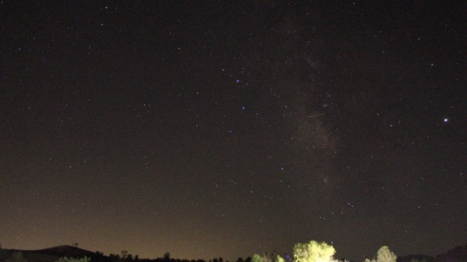

Then, in the summer of 2018, my parents bought a DSLR camera. I was beyond excited to test its capabilities and how it differs from my phone. I felt like
a new world of photography opened up in front of my eyes. I was eager and curious to learn what it can do and the many techniques and methods of shooting
I can test. For an entire year it was nothing but trial and error when taking photos. I learned about ISO, aperture, shutter speed, and how using different
lenses helped in some scenarios. Many would think that taking good pictures with a good camera is all to make a masterpiece, but what many don't realize is
how thats only half the story and process. Editing is the other half I only had some vague experience with it. It was tough for a time because no matter how
many tries I did with editing I always felt like I was doing something wrong or not doing something that should be done. It took me a couple of years to realize
that editing isn't something thats done the same every time. There isn't a solid fixed formula to editing my photos right and that deep down it meant editing
my photos to my liking and to my preference. That's where photographers like me can shine and show off our work in our own style and imagination. And this
photograph is made me excited to have learned a lot about photography.
